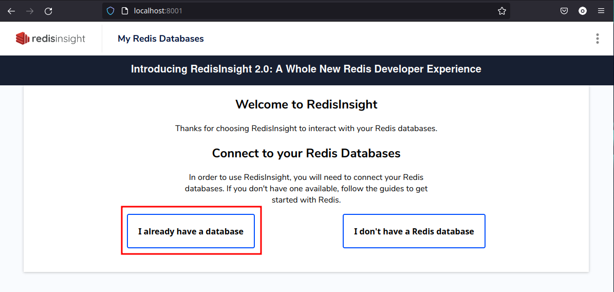
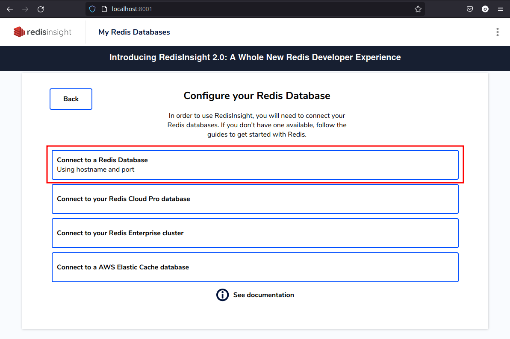
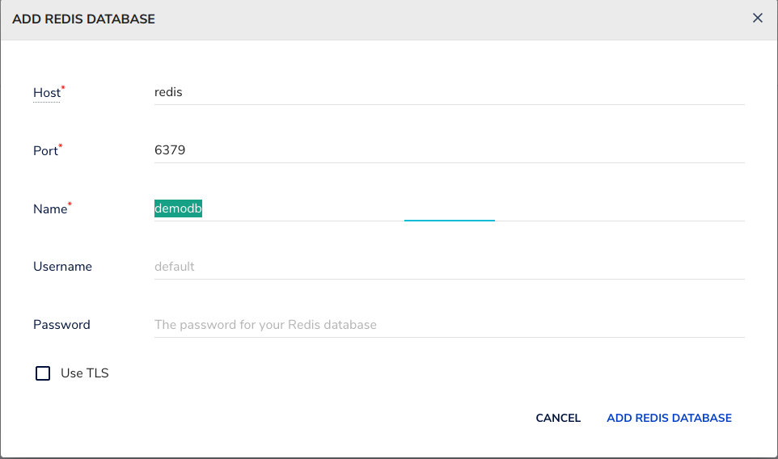
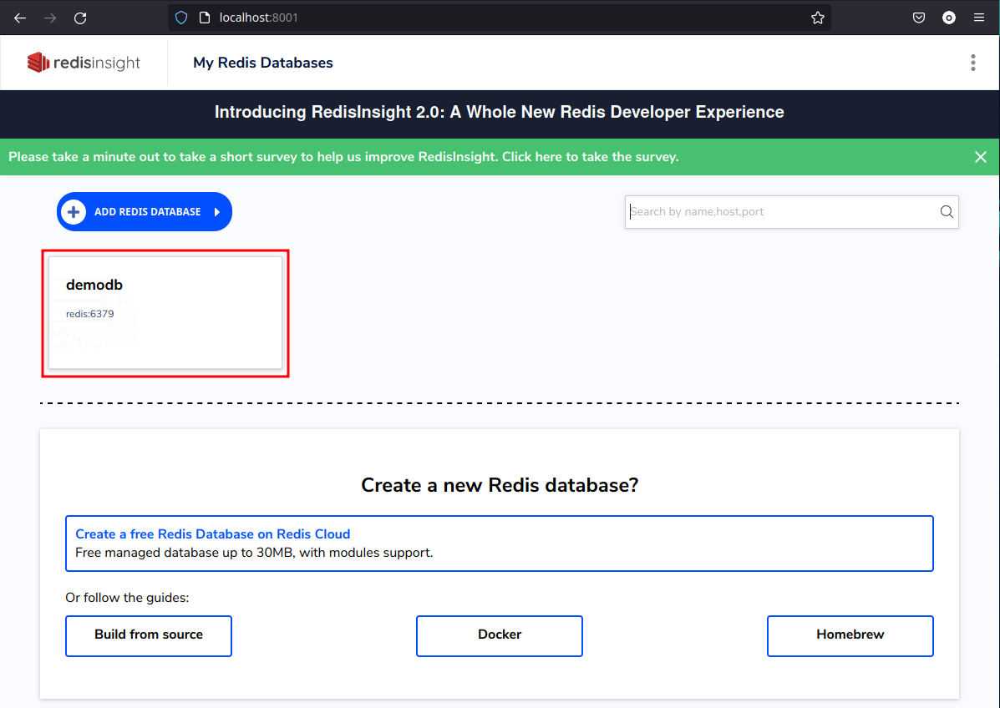
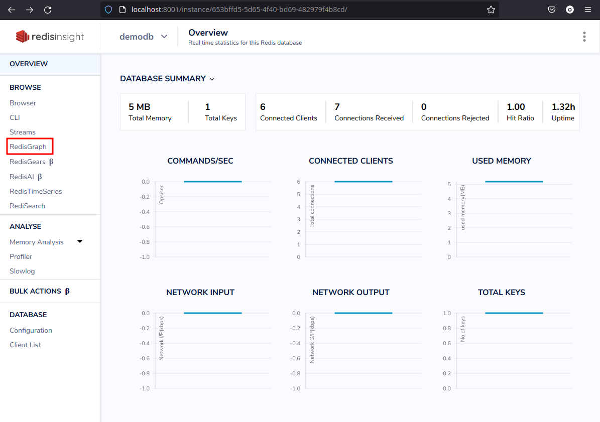
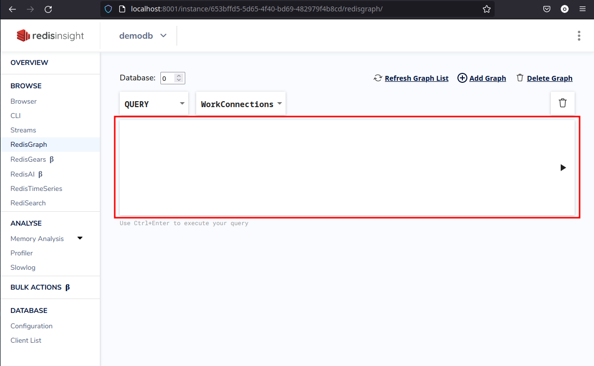
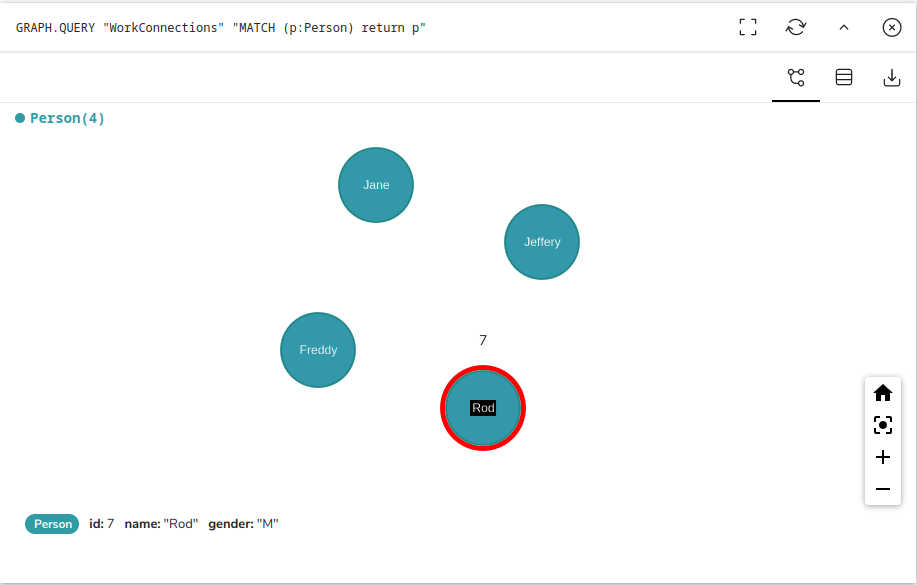
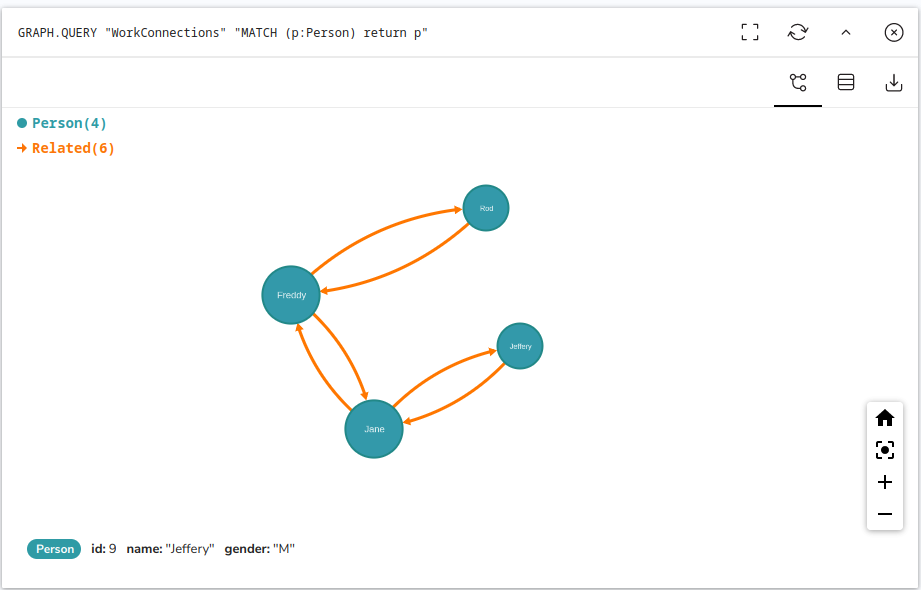
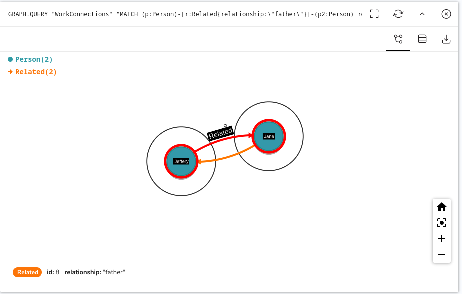

I’m familiar with Redis as a fast cache and have used it as such in the past. A few days ago I saw someone using Redis Insights to interact with RedisGraph and it looked pretty cool.
I wasn’t aware that Redis Graph and Stream existed, so I’m keen to learn more about them. In this post I’m going to do a lightning tour of how I got started for anyone who wants to get stuck in quickly.
Prerequisites
The only thing you need to get started is Docker - I’m going to be launching Redis and Redis Insight using a Docker Compose File. The benefits of doing this are around the connectivity between the two containers and the insight instance seeing the Redis server.
Docker Compose
Lets start with the compose file, this is just straight forward yaml representation of what we want to achieve. In its simplest form, this will work;
version: '3.9'
services:
redis:
image: redis/redis-stack-server:latest
ports:
- 6379:6379
volumes:
- /home/owen/redis-data:/data
redis-insight:
image: redislabs/redisinsight:latest
ports:
- 8001:8001
volumes:
- /home/owen/redis-insights:/db
This is saying, create me two services backed by the redis server image (redis/redis-stack-server:latest) and the redis insight image (redislabs/redisinsight:latest) and expose them on ports 6379 and 8001 respectively.
Optionally I’ve mounted volumes in the containers so that I can tear it all down and when I start again it will have preserved my data.
Starting the infrastructure
Starting the infrastructure is as simple as running the up command from the same dir as the docker-compose.yaml file.
docker compose up
This will give us an output something like this;
$ docker compose up
[+] Running 2/2
⠿ Container redis-insight-redis-insight-1 Started 0.5s
⠿ Container redis-insight-redis-1 Star... 0.5s
Opening the UI
The UI can be launched from http://localhost:8001
The first screen you’ll see is Welcome screen

From here - say that you already have a database then choose to connect to the database.

As we used docker compose, the internal network wiring is done, so we can connect to the redis server by the name redis. This is the name we gave it in docker-compose.yaml
q
Provide the details as below;

Clicking ADD REDIS DATABASE takes us to our databases - from here we choose demodb

This takes us to the main page for this database and we can select RedisGraph for the menu.

This screen is where we’re going to create the graph and do our simple family graph

Creating a simple graph
The first thing we want to do is add our people to the database. This is done by defining the nodes that make up these people with some simple attributes that define them.
Paste this snippet into the query window;
CREATE (p1:Person{name:"Rod", gender: "M"}),
(p2:Person{name:"Jane", gender: "F"}),
(p3:Person{name:"Freddy", gender: "M"}),
(p4:Person{name:"Jeffrey", gender: "M"})
All being well, we’ve added 4 people to the database and we can visualise them with a simple MATCH command
MATCH (p:Person) return p
This gives us a graph of the people with no links

Linking up the family
We can now link up the family;
First things first - Rod and Freddy are brothers
MATCH (p1:Person{name:"Rod"}), (p2:Person{name:"Freddy"})
CREATE (p1)-[:Related{relationship:"brother"}]->(p2)
CREATE (p2)-[:Related{relationship:"brother"}]->(p1)
Jane and Freddy are married
MATCH (p1:Person{name:"Jane"}), (p2:Person{name:"Freddy"})
CREATE (p1)-[:Related{relationship:"spouse"}]->(p2)
CREATE (p2)-[:Related{relationship:"spouse"}]->(p1)
And Jane’s father is Jeffrey
MATCH (p1:Person{name:"Jeffrey"}), (p2:Person{name:"Jane"})
CREATE (p1)-[:Related{relationship:"father"}]->(p2)
CREATE (p2)-[:Related{relationship:"daughter"}]->(p1)
We can look at the graph this generates using
MATCH (p:Person) return p
The graph of this looks like

How about if we want tot know who is a father
MATCH (p:Person)-[r:Related{relationship:"father"}]-(p2:Person) return p
This query is looking for people who are Related explicitly with the relationship of "father".

Scratching the surface
This all doesn’t even scratch the service of what can be achieved - I’m already seeing the importance of SDKs and APIs to load data efficiently into and out of the database but I think it’s really an interesting area…